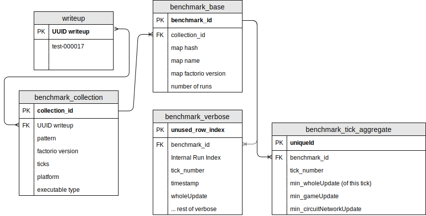
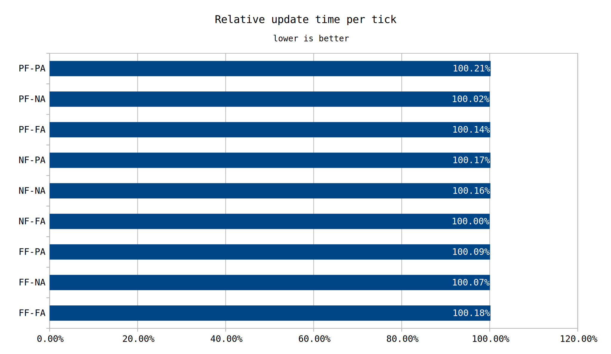

Future tests will be conduced by performing multiple --benchmark-verbose passes on them. The minimum update time for each specific tick will be saved. Aggregation will be used at times but caution must be taken.
Before 0.17 was released, we had limited options when it came to benchmarking. test-000001 looked at possible ways to benchmark Factorio. At the time it was decided that the best way to benchmark the game was using the --benchmark command switch. However, with the release of 0.17, another command switch, --benchmark-verbose, was added. This test is to evaluate this switch and determine how it can be useful in our benchmarks.
In order to understand what you can do better, it's important to understand what you do now. The current methodology is as follows.
First, a hypothesis is formulated. This can be any manner of things, from a comparison of two designs to a comparison of two versions of the game. It is helpful to frame the thing you wish to test as a question.
Second, the test maps are to be created. Sometimes only a single map is needed, other times many different ones are. The intent is to create maps as comparable to one another as possible, except for the aspect of our hypothesis we are attempting to test. Usually I end up creating one common map and then at the very end make whatever modification I am testing and save the variations. All maps except those testing such aspects will be void of pollution, biters, and any other extraneous factors. Further, as the cost to designs does not scale linearly, designs are copied several times with the goal of bringing the effective UPS into the 60-120 range.
While testing highly varying designs can be done, it doesn't accurately tell you which aspects of each design are better or worse than one another. Two entire bases benchmarked won't be as informative as two specific rocket fuel designs, which itself doesn't tell you as much as two trains waiting at a staion with differing conditions. Attempting where possible to narrow the focus of the saves is ideal. There is a risk of going too narrow, however. If you are attempting to validate two competing belt based furnace designs, there is a possiblity that by using infinity chests and loaders to provide the ore you are not accurately capturing the performance of the miners. My aim is to narrow the field but not so much that the design no longer represents how it would be built in the normal game.
Once comparable maps have been created, they are benchmarked. Normally, the headless Linux version of the game is used to perform benchmarking. Each map is benchmarked for 3 times and then the results averaged. Benchmarks are ran such that the order is run1: map1, map2, map3 ... run2: map1, map2, map3 ... This interleaving should minimize any advantage or disadvantage, but overall that has yet to be tested. The duration of each benchmark varies. Typically the duration is 10k or 20k ticks. If there is a known cycle, a value encompassing that known is used (for example: we know a train will get to its station in 7546 ticks, if we are measuring movement, a value less than that will be chosen).
Finally results are aggregated and then conclusions drawn. If further insight is needed, additional benchmarks or performance profiles are conducted. At this stage a detailed writeup is created describing the steps taken and data collected. If data is incorrect or outside factors could plausibly change the results and conclusions, the test writeup may be ammended, or an additional test with writeup created which considers those factors.
For those unfamiliar, --benchmark-verbose is a command line switch which allows outputting the per tick cost of numerous different timings. The (nearly) full list of timings available is as follows:
While these timings are useful to know, the bigger benefit here is that we receive the per tick data. We know exactly which ticks took a long time, and which high level category(s) caused it.
By far the biggest cause for concern in our current methodology is the run to run variance observed. While running 3 runs and taking an average does smooth outliers, it is still factoring them in. Prior to the introduction of --benchmark-verbose, the three datapoints we could feasably collect from a benchmark were avg_ms, min_ms, and max_ms. There was no way to know if for example 50% of the ticks took ~min_ms and 50% took ~max_ms, or if all the ticks except for 2 were at avg_ms.
Since the game is deterministic, running a 1000 tick benchmark on the same map should produce the same result every time. Due to operating system interuptions or processor throttling, it is rare to see two perform in that manner. Now that per tick data can be collected, several runs on that map can be taken, and specific ticks filtered. There are several ideas that could be employed to filter the data, for example averaging the results of that tick together after removing the slowest tick. Another option is to take the fastest instance of a given tick and use that as the result. The reasoning is that any tick slower than the best tick must have been interfered with by the operating system. For the time being we will select the minimum tick time of each tick as our result.
Since we are taking the minimum result of each tick, each additional run of a set of maps gets us closer to the perfect dataset for each map, without penalizing us for any operating system interruption. The number of runs is likely to increase beyond 3, but the exact number will have to be explored in the data portion of this writeup.
By virtue of getting per tick data, we are multiplying our data load by a factor of 10-20k. That is, assuming no changes to number of runs or tick counts. With this level of data growth, storing and managing that much data in csv format would simply be unfeasable. Fortunately, there are plenty of free database software available.
Before we even select a software, it is good to plan what tables and data we will store.
A benchmark collection is as the name states, a collection of benchmarks. Specifically, it is the maps associated with each other when a benchmark is ran, for instance, benchmarking all maps that start with "test-000036".
A benchmark base is a single map belonging to a collection. For instance "test-000036.infinity_chest_2k_spm_rev1.zip".
A benchmark verbose is a datapoint of a verbose benchmark. It represents a single tick in a single run of all runs performed in this benchmark collection for each benchmark base. The vast majority of the data ends up here.
A benchmark tick aggregate is the best tick of each tick of all benchmark runs performed to a given map. While this data is generated off the benchmark verbose data, this table serves as a convenience.
Finally we have a many to many relation with a writeup and a collection. A collection could be associated with many writeups, and a writeup could be associated with multiple collections. This table also serves as a convenience table.
Now that we know how we want our data organized, we need to implement it. It was decided to use MariaDB. However, considering the similarity of the various SQL databases, it is not likely to matter which one we choose. In the future either the exact database structure will be released or outside submissions will be enabled to this database.
Now that we have set up data storage and defined the initial new methodology, we need to validate it. It would be advantageous to use both methodologies on a common set of tests to validate. At the same time, we may also be able to kill two birds with one stone.
test-000034 featured several highly similar designs, only varying in the contents of the cars' fuel or ammo slots. A critisim of that test was that because the designs were so similarly performing, the conclusion that the case with the fuel and ammo slots empty performing the best was incorrect. I would also agree that due to the extreme closeness of the results, random variance could have produced those results just as much as any actual difference could have.
With a more rigorous approach, the correct answer should be determined. In the previous test, 3 runs were performed with 10000 ticks per benchmark. This time, more considerate numbers will be chosen. Since this map consists of near exclusively inserters moving items through cars, there will be a period of 26 ticks for a huge portion of the update. As such, choosing exactly 10010 (385*26) ticks should normalize the amount of swings across the different maps. For the number of runs, we will multiply by 10. Doing 30 runs allows us to see 10 old methodology datapoints as well as a 30 possible "best" ticks.

Data collected from the test. Graphs, screenshots, and supporting evidence
Included in this template folder is a folder for raw data. Data that is too big, clunky, or ugly can be dumped here. There is also an images folder to store images needed for this test. Consider using the optipng utility to keep the size down a bit. For graphs, .svg format does work well since it is scalable.
All maps will be uploaded here.
Closing notes about this test and other tests which may test a similar attribute or property